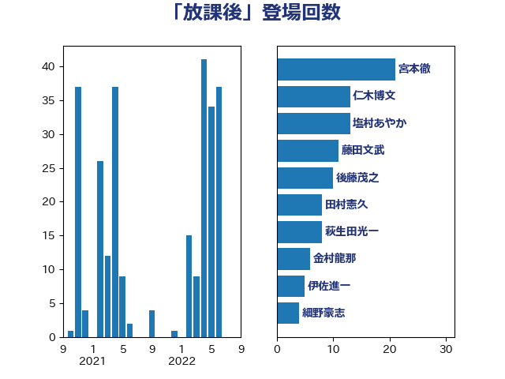

単語「放課後」

| 宮本徹 | 日本共産党 | 21 回 |
| 仁木博文 | 無所属 | 13 回 |
| 塩村あやか | 立憲民主党 | 13 回 |
| 藤田文武 | 日本維新の会 | 11 回 |
| 後藤茂之 | 自由民主党 | 10 回 |
| 田村憲久 | 自由民主党 | 8 回 |
| 萩生田光一 | 自由民主党 | 8 回 |
| 金村龍那 | 日本維新の会 | 6 回 |
| 伊佐進一 | 公明党 | 5 回 |
| 細野豪志 | 自由民主党 | 4 回 |
| 野田聖子 | 自由民主党 | 4 回 |
| 下条みつ | 立憲民主党 | 3 回 |
| 小泉進次郎 | 自由民主党 | 3 回 |
| 山田勝彦 | 立憲民主党 | 3 回 |
| 末松信介 | 自由民主党 | 3 回 |
| 杉田水脈 | 自由民主党 | 3 回 |
| 坂本哲志 | 自由民主党 | 2 回 |
| 打越さく良 | 立憲民主党 | 2 回 |
| 早坂敦 | 日本維新の会 | 2 回 |
| 森山浩行 | 立憲民主党 | 2 回 |
| 池田佳隆 | 自由民主党 | 2 回 |
| 西村康稔 | 自由民主党 | 2 回 |
| 高木かおり | 日本維新の会 | 2 回 |
| 下野六太 | 公明党 | 1 回 |
| 佐藤英道 | 公明党 | 1 回 |
| 吉田はるみ | 立憲民主党 | 1 回 |
| 吉良よし子 | 日本共産党 | 1 回 |
| 太栄志 | 立憲民主党 | 1 回 |
| 小林茂樹 | 自由民主党 | 1 回 |
| 山下芳生 | 日本共産党 | 1 回 |
| 山井和則 | 立憲民主党 | 1 回 |
| 山谷えり子 | 自由民主党 | 1 回 |
| 岡本あき子 | 立憲民主党 | 1 回 |
| 岸真紀子 | 立憲民主党 | 1 回 |
| 川田龍平 | 立憲民主党 | 1 回 |
| 平林晃 | 公明党 | 1 回 |
| 早稲田ゆき | 立憲民主党 | 1 回 |
| 浦野靖人 | 日本維新の会 | 1 回 |
| 浮島智子 | 公明党 | 1 回 |
| 湯原俊二 | 立憲民主党 | 1 回 |
| 田野瀬太道 | 無所属 | 1 回 |
| 矢倉克夫 | 公明党 | 1 回 |
| 福島伸享 | 無所属 | 1 回 |
| 笠浩史 | 無所属 | 1 回 |
| 自見はなこ | 自由民主党 | 1 回 |
| 芳賀道也 | 国民民主党 | 1 回 |
| 西田実仁 | 公明党 | 1 回 |
| 西銘恒三郎 | 自由民主党 | 1 回 |
| 赤嶺政賢 | 日本共産党 | 1 回 |
| 長妻昭 | 立憲民主党 | 1 回 |
| 高野光二郎 | 自由民主党 | 1 回 |